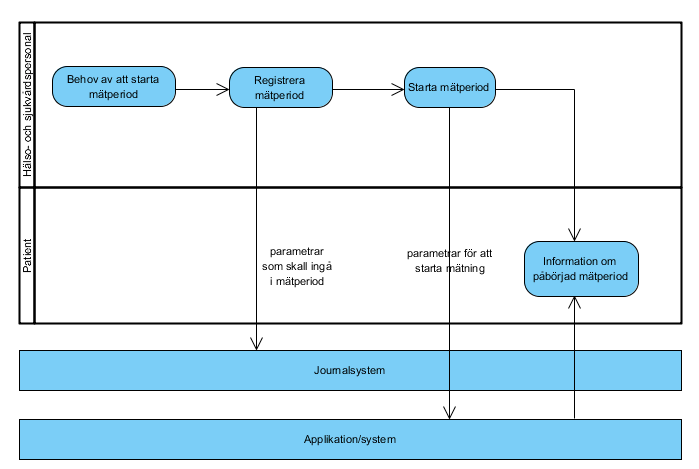
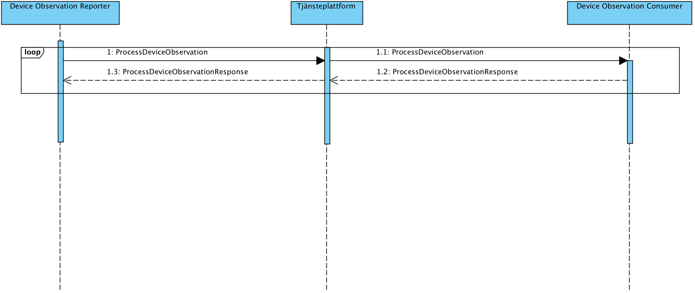

ihe: pcd: dec
1.0.1 - release
ihe: pcd: dec - Local Development build (v1.0.1) built by the FHIR (HL7® FHIR® Standard) Build Tools. See the Directory of published versions
Källa: Tjänstekontraktsbeskrivning IHE PCD DEC – Mätdata från mätutrustning, version 1.0.1 (2017-10-18), TKB_IHE_PCD_DEC.docx.
Den transaktion som valts ut ur Contiuas e2e-arkitektur är den som sker mellan rollerna Personal Healthcare Gateway (PHG) och Services application, protokollen mellan dessa båda funktionella komponenter i Continuas referensmodell samlas under rubriceringen Services-IF eller Services Interface.
Protokollen i Services-IF syftar till att standardisera transaktionerna mellan den personliga insamlingsinfrastrukturen och vårdgivarnas uppsamlingspunkt (behandlingsplattform). Det finns andra tänkbara scenarion där informationen samlas av andra parter än en vårdgivare – t.ex. ett personligt hälsokonto, men sådan datainsamling faller utanför den nationella arkitekturens och vårdgivarnas uppdrag.
Continua pekar på en SOAP-ansats för ”Observation Upload” som innebär stor komplexitet i form av WS-Security, SAML 2 och WS-Reliable Messaging. Dessa standarder måste stödjas för att vara continua-compliant. Dessa standarder (som i sin tur kräver WS-Addressing och SOAP-1.2) används inte i dagens svenska protokoll – varken inom Hälso- och sjukvården (RIVTA BP 2.1) eller statliga myndigheter (SHS-2).
IHE profilen för PCD (Patient Care Devices) definierar flöden och interaktioner mellan vårdsystem och system som hanterar mät- och undersökningsapparatur. IHE profilen specificerar inte nya standards utan är snarare rekommendationer på hur redan etablerade standards ska appliceras i specifika användningsfall. En IHE profil kan enkelt jämföras med en RIV-TA tjänstedomän. Profilen definierar vidare aktörer och meddelandetransaktioner (jmf tjänstekontrakt) mellan aktörer.
En aktör i en IHE profil behöver inte nödvändigtvis direkt motsvara ett system. Aktören är en modellering, en gruppering av atomär funktionalitet och egenskaper. Ett fysiskt system kan i verkligheten agera som en IHE aktör eller som en grupp aktörer. Detta för att det specifika systemet kanske är designat för att täcka funktionalitet över flera aktörsgränser eller för att det kan finnas direkta krav i IHE profil där ett system som åberopar kompabilitet mot en viss IHE aktör även måste stödja en eller flera andra IHE aktörer. Ett konkret exempel på detta är att ett system som stödjer aktören Device Observation Reporter (system som kan leverera mät- och observationsdata) även måste stödja aktören Consistent Time, d v s har funktionalitet för att säkra att intern klocka för generering av tidsstämplar är synkroniserad mot en gemensam tidsreferens i samverkansdomänen.
I ursprungliga profilen definieras två aktörer, Device Observation Consumer (kan exempelvis vara ett journalsystem) och Device Observation Reporter (kan exempelvis vara en hemmonitoreringsplattform). Den definierade transaktionen mellan dem är överföringen av mät- och observationsdata, IHE PCD-01.
Continua Alliance paketerar interoperabilitetsprofiler från bl.a. standardiseringsorganet IHE i syfte att åstadkomma just detta. Continuas paketeringar av standarder benämns ”design guidelines”. Den aktuella paketeringen benämns ”Observation Upload” [R2].
Följande diagram visar hur ett typiskt flöde ser ut vid hemmonitorering. Flödet visar när en mätning skall starta, när mätvärden hämtas, om en mätperiod behöver uppdateras eller avslutas. ”Applikation/System” avser i bilden den infrastruktur för hemmonitorering som tillhandahålls som tjänst på marknaden.

Beroende på monitoreringstjänstens funktion, sker manuell inmatning av monitoreringsuppdraget i en kundingång i monitoreringstjänsten eller via en integration med journalsystemet. Denna informationsöverföring sker utanför relation till aktuellt standardiseringsarbete.
| Namn | Beskrivning |
|---|---|
| Device Observation Reporter | De system som i detta fall utgör källsystemet där observationer och mätningar produceras eller mellanlagras. |
| Tjänsteplattform | Tjänsteplattformen är det lager som hanterar virtuella tjänster, aggregerande tjänster samt anpassningstjänster. |
| Device Observation Consumer | Det system som används för att konsumera information. D.v.s. det system som använder tjänster enligt ett tjänstekontrakt. |

Tjänstedomänen tillämpar källsystem-adressering där varje adress är personuppgiftsansvarig (PuA) för tjänstekonsumenten, det förutsätter att tjänstekonsumenten(device observation reporter) känner till källsystemets(device observation consumer) HSA-id.
Den logiska adressen anges med elementet To: som barn till elementet.
Exempel logisk adress SE55667788-0101:
<soap:Envelope xmlns:soap="http://www.w3.org/2003/05/soap-envelope" xmlns:add="http://www.w3.org/2005/08/addressing" xmlns:urn="urn:ihe:pcd:dec:2010" xmlns:soapenv="http://www.w3.org/2003/05/soap-envelope">
<soap:Header xmlns:wsa="http://www.w3.org/2005/08/addressing">
<add:To soapenv:mustUnderstand="true">SE55667788-0101</add:To>
</soap:Header>
Ej tillämpad för Device Observation Reporter, en Device Observation Consumer skall uppdatera EngagemangsIndex enligt de regler som finns för de tjänstekontrakt man producerar, t.ex GetObservations.